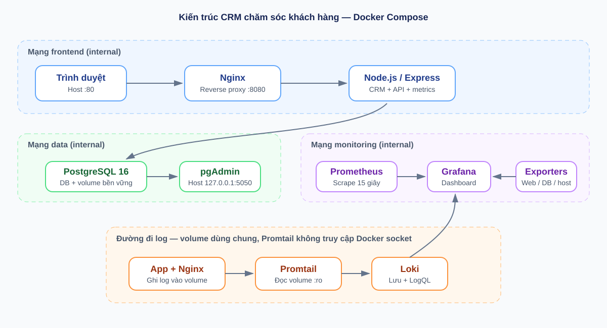

BÁO CÁO HỌC PHẦN
Trong môi trường kinh doanh hiện nay, dữ liệu khách hàng và lịch sử tương tác là một phần quan trọng của hoạt động bán hàng và chăm sóc sau bán. Một hệ thống CRM (Customer Relationship Management) giúp tập trung thông tin, hỗ trợ tra cứu, phân loại khách hàng theo trạng thái và duy trì luồng làm việc có thể quan sát được.
Báo cáo trình bày việc xây dựng một ứng dụng CRM mẫu và đóng gói toàn bộ thành phần hạ tầng bằng Docker Compose. Hệ thống sử dụng Node.js/Express cho dịch vụ web, PostgreSQL cho dữ liệu quan hệ, pgAdmin để quản trị cơ sở dữ liệu và Nginx làm reverse proxy. Prometheus, Grafana, cAdvisor và các exporter phụ trách metrics; Loki và Promtail đảm nhiệm tập trung log và truy vấn LogQL.
Mục tiêu không chỉ là làm giao diện quản lý khách hàng mà còn mô tả cách các dịch vụ phối hợp, cách kiểm tra trạng thái vận hành và các lựa chọn bảo mật cơ bản. Các cấu hình được lưu cùng mã nguồn để có thể tái tạo môi trường demo, thay vì phụ thuộc vào thao tác cài đặt thủ công trên một máy duy nhất.
| Trường thông tin | Nội dung cần điền |
|---|---|
| Họ và tên | [HỌ VÀ TÊN] |
| Mã số sinh viên | [MÃ SỐ SINH VIÊN] |
| Lớp / khóa | [LỚP / KHÓA] |
| Giảng viên | [TÊN GIẢNG VIÊN] |
| Repository GitHub | [URL REPOSITORY CÓ MÃ SỐ SV] |
Đề tài được chọn là Đề 4 — Hệ thống CRM Chăm sóc Khách hàng. Ứng dụng quản lý danh sách khách hàng với các trường họ tên, email, số điện thoại, công ty, ghi chú và trạng thái. Ba trạng thái mẫu gồm tiềm năng (lead), đang chăm sóc (contacted) và đã chuyển đổi (customer). Người dùng có thể tìm kiếm, lọc, thêm và xóa dữ liệu qua trình duyệt.
Phần backend cung cấp API REST và kết nối PostgreSQL. Nginx là điểm truy cập duy nhất cho website; cơ sở dữ liệu không publish cổng ra host. pgAdmin được cung cấp để quản trị DB trong môi trường thực hành. Những dịch vụ giám sát/log được tách thành container riêng nhưng cùng khai báo trong một Compose project.
| Yêu cầu | Thành phần thực hiện | Minh chứng cần chụp khi demo |
|---|---|---|
| Quản lý mã nguồn, README, 3 commit | Git repository, README và 3 mốc commit đề xuất | Trang repository, lịch sử commit |
| Web + Database + công cụ quản lý | Express, PostgreSQL, pgAdmin | CRM có dữ liệu và pgAdmin mở bảng customers |
| Reverse proxy | Nginx, proxy headers, CSP/security headers | Website qua cổng 80, header response |
| Metrics | Prometheus, Grafana, exporters, cAdvisor | Targets UP và dashboard có dữ liệu |
| Log tập trung, 2–3 LogQL | Promtail đọc volume, Loki lưu log | Explore Loki với các truy vấn mẫu |
| Hardening | Non-root, network nội bộ, hạn chế quyền, headers | Compose config, docker inspect, response headers |
Thành công chức năng được đánh giá bằng khả năng chạy toàn bộ stack với `docker compose up -d --build`, API kết nối DB và có thể tạo/tra cứu dữ liệu. Thành công vận hành được đánh giá qua health check, Prometheus targets, dashboard Grafana và khả năng tra cứu log mới bằng LogQL. Tính tái lập được chứng minh bằng cấu hình, hướng dẫn, ảnh chụp và lịch sử commit trong repository.
Kiến trúc gồm các nhóm chức năng chạy trong Docker Compose. Cấu hình mạng tách các luồng frontend, data và monitoring. Trình duyệt chỉ kết nối tới Nginx; Nginx chuyển tiếp request đến Express. Ứng dụng mới được kết nối PostgreSQL và cung cấp endpoint metrics cho Prometheus.

Hình 1. Kiến trúc dịch vụ và các network Docker Compose
`edge` là bridge ingress cho Nginx và các giao diện quản trị/metrics đã publish để host có thể truy cập. `frontend` là network internal cho Nginx và app; `data` internal dành cho app, PostgreSQL, pgAdmin và PostgreSQL exporter; `monitoring` internal kết nối các exporter, Prometheus, Grafana, Loki, Promtail và những service cần được scrape. Cổng quản trị metrics được bind loopback trên host. Việc tách ingress khỏi các network east-west giúp các service vẫn giao tiếp nội bộ theo nhu cầu mà không phụ thuộc published port vào network internal.
Volume được dùng cho dữ liệu PostgreSQL, Grafana, Prometheus, Loki và các file log. Việc tách volume dữ liệu khỏi vòng đời container giúp thao tác cập nhật image không xóa dữ liệu. Tuy nhiên, volume không thay thế backup; cần xuất bản sao PostgreSQL định kỳ khi dùng dữ liệu thật.
Ứng dụng Node.js/Express phục vụ giao diện tĩnh từ thư mục `public` và REST API dưới tiền tố `/api`. Giao diện hiển thị tổng số bản ghi theo trạng thái, tìm kiếm khách hàng, bộ lọc trạng thái và hộp thoại thêm bản ghi. API cung cấp các thao tác liệt kê, tạo, cập nhật và xóa; mọi thông tin đầu vào được giới hạn kích thước và kiểm tra kiểu/định dạng trước khi lưu.
Các truy vấn SQL sử dụng placeholder tham số `$1`, `$2` thay vì ghép giá trị người dùng vào chuỗi SQL. Email có unique constraint; trường trạng thái được giới hạn bằng CHECK constraint ở DB để bảo vệ tính toàn vẹn ngay cả khi API bị bỏ qua. Các index được tạo cho status và thời gian tạo nhằm hỗ trợ tra cứu.
| Cột | Kiểu / ràng buộc | Ý nghĩa |
|---|---|---|
| id | BIGSERIAL, PRIMARY KEY | Định danh bản ghi |
| name | VARCHAR(120), NOT NULL | Họ tên khách hàng |
| VARCHAR(254), UNIQUE | Email duy nhất, chuẩn hóa chữ thường ở API | |
| phone/company | VARCHAR giới hạn độ dài | Thông tin liên hệ và tổ chức |
| status | CHECK lead/contacted/customer | Trạng thái chăm sóc |
| notes | TEXT | Ghi chú nghiệp vụ |
| created_at / updated_at | TIMESTAMPTZ | Thời điểm tạo và cập nhật |
Script `database/init.sql` được PostgreSQL entrypoint chạy khi khởi tạo data directory trống. Script tạo bảng, index và ba khách hàng mẫu, có `ON CONFLICT DO NOTHING` để tránh trùng email. Tài khoản DB lấy từ `.env`, ứng dụng không sử dụng user quản trị mặc định `postgres` để xử lý CRUD.
pgAdmin được dùng để kiểm tra server, schema, bảng customers và dữ liệu. Tên host DB trong pgAdmin là `db` — DNS service của Compose, không phải `localhost`, vì hai dịch vụ giao tiếp trong network Docker.
Nginx publish cổng 80 của máy host và lắng nghe cổng 8080 không đặc quyền bên trong container. Location `/` chuyển tiếp tới `http://app:3000`, đồng thời đặt các header `Host`, `X-Real-IP`, `X-Forwarded-For` và `X-Forwarded-Proto`. Nhờ vậy backend không cần được publish cổng riêng ra host và có thể nhận metadata của request gốc.
Endpoint `/health` của Nginx được dùng trong healthcheck container. Endpoint `/stub_status` chỉ phục vụ nginx exporter trên mạng nội bộ và không được expose qua host. `server_tokens off` hạn chế lộ phiên bản Nginx trong response.
Dùng `Invoke-WebRequest -Method Head http://localhost` hoặc `curl -I http://localhost` để xem các header. Dùng `docker compose ps` để chứng minh port public chỉ là Nginx; kiểm tra `docker compose port app 3000` không trả về port mapping. Ảnh chụp thật cần thể hiện URL truy cập CRM qua Nginx và response headers trong Developer Tools/terminal.
Prometheus đọc cấu hình `monitoring/prometheus.yml`, scrape mỗi 15 giây và lưu dữ liệu trong named volume với retention 15 ngày. Ứng dụng sử dụng `prom-client` để xuất default Node.js process metrics cùng histogram độ trễ HTTP. Histogram có nhãn method, route và status code, cho phép tính request rate và latency percentile.
Nginx exporter đọc endpoint `stub_status`; PostgreSQL exporter thu thập thông tin database bằng user ứng dụng; cAdvisor thu thập CPU và memory của container. Prometheus có các job riêng để kiểm tra từng target. Tình trạng `UP` cho biết Prometheus kết nối được exporter tại lần scrape gần nhất; không có nghĩa toàn bộ chức năng nghiệp vụ đã được kiểm thử.
Grafana tự cấu hình datasource Prometheus và Loki bằng provisioning. Dashboard `CRM - System Overview` được lưu bằng JSON để có thể tái tạo, gồm sáu panel:
PromQL chính gồm `sum(rate(crm_http_request_duration_seconds_count[5m]))`, `histogram_quantile(0.95, sum(rate(crm_http_request_duration_seconds_bucket[5m])) by (le))`, `pg_stat_database_numbackends{datname="crm"}` và `nginx_connections_active`. Metrics chỉ có ý nghĩa sau khi tạo traffic và chờ scrape.
Mở Prometheus → Status → Targets và xác nhận các job `crm-app`, `nginx`, `postgres`, `cadvisor` ở trạng thái UP. Tiếp theo tạo một số request CRM, mở dashboard Grafana, chọn khoảng thời gian gần nhất và kiểm tra dữ liệu. Khi panel container trống, cần xác minh cAdvisor có thể đọc host runtime; đường dẫn mount và khả năng hỗ trợ phụ thuộc OS/engine.
Middleware của Express ghi một dòng JSON cho mỗi response HTTP, gồm thời gian, method, path và status; các lỗi ứng dụng/healthcheck cũng được ghi nhận. Nginx ghi access log và error log vào thư mục log. Các file được lưu trên named volume mà ứng dụng/Nginx ghi và Promtail chỉ mount đọc (`:ro`). Cách này tránh cấp cho Promtail quyền truy cập Docker daemon socket.
Promtail theo dõi file log, gán nhãn `job` và `service`, phân tích trường JSON của log ứng dụng rồi gửi batch đến API push của Loki. Loki lưu log vào volume riêng. Log ứng dụng có nhãn level, method, status và type để lọc; không nên gắn nhãn có độ phân biệt quá cao như email khách hàng hoặc URL chứa định danh.
Truy vấn toàn bộ log từ ứng dụng CRM:
Lọc riêng log request HTTP sau khi Promtail parse JSON:
Tìm response lỗi 5xx trong access log Nginx:
Hai truy vấn đầu sử dụng label được sinh từ file JSON; truy vấn Nginx lọc chuỗi status trong access log. Nếu dữ liệu chưa xuất hiện, kiểm tra health của Promtail/Loki, quyền đọc volume, log mới phát sinh và time range Explore.
Grafana đã provision Loki datasource. Chọn Explore → Loki, dán truy vấn, đặt thời gian 15 phút gần nhất và bấm Run query. Tạo request qua giao diện để thấy log mới; thử truy vấn status 5xx sau khi chủ động tạo request lỗi trong môi trường lab. Không đưa dữ liệu cá nhân/nhạy cảm vào log demo.
| Biện pháp | Cách áp dụng | Giới hạn / lưu ý |
|---|---|---|
| Non-root | Ứng dụng dùng user `node`; Nginx dùng user `nginx`, cổng nội bộ 8080 | Kiểm tra image bên thứ ba theo runtime thực tế |
| Filesystem | App, Nginx, Prometheus dùng read-only filesystem; thư mục ghi tạm dùng tmpfs | Named volume vẫn cho phép ghi dữ liệu cần thiết |
| Capabilities | App/Nginx drop toàn bộ Linux capabilities, no-new-privileges | cAdvisor cần quan sát host theo quyền mount đặc thù |
| Network isolation | Bridge internal tách frontend/data/monitoring; DB không publish | Người có quyền Docker host vẫn kiểm soát container |
| Secrets | Mật khẩu lấy từ `.env`, file bị ignore | Compose environment không phải secret manager production |
| Input/SQL | Giới hạn payload, validate, SQL parameter binding, constraint DB | CRM chưa có đăng nhập/phân quyền người dùng |
| HTTP headers | CSP, chống sniff/frame, referrer policy, ẩn phiên bản | Chưa thay thế TLS, xác thực hoặc WAF |
| Giới hạn tài nguyên | App/DB có giới hạn CPU/RAM; app giới hạn PID | Cần điều chỉnh theo tải thực |
Dự án cung cấp một CRM demo dùng PostgreSQL, có công cụ quản trị DB và chạy qua reverse proxy. Tất cả thành phần được khai báo trong Docker Compose, tạo thuận lợi để dựng lại trên máy khác. Giao diện hỗ trợ tìm kiếm, lọc, thêm và xóa khách hàng; schema có ràng buộc dữ liệu và API dùng truy vấn tham số.
Prometheus được cấu hình scrape ứng dụng, Nginx exporter, PostgreSQL exporter và cAdvisor. Grafana có datasource và dashboard provisioned. Loki/Promtail cung cấp luồng log tập trung cùng các truy vấn LogQL mẫu. Hệ thống áp dụng nhiều lớp hardening phù hợp môi trường lab: non-root, network nội bộ, giảm quyền container, read-only filesystem, giới hạn tài nguyên, security headers và quản lý mật khẩu ngoài source.
Ưu tiên kế tiếp là xác thực người dùng với vai trò tối thiểu, TLS, rate limiting, audit trail và quy trình quản lý secret an toàn. Sau đó có thể thêm migration versioned, backup PostgreSQL, cảnh báo Prometheus, dashboard SLO, chính sách retention log, pagination, phân công nhân viên chăm sóc và kiểm thử tự động API. Trước khi triển khai thật cần rà soát bảo mật độc lập, pin image theo digest và thử phục hồi backup.
Đề tài cho thấy cách đóng gói ứng dụng và các thành phần quan sát hệ thống vào một môi trường nhất quán. Điểm quan trọng trong demo là giải thích được luồng request/DB, khác biệt giữa metrics và logs, vai trò reverse proxy, giới hạn của hardening và cách xác minh bằng công cụ — không chỉ dừng ở việc container báo trạng thái running.
Tạo repository public/private theo yêu cầu học phần, đặt tên gắn mã số sinh viên, ví dụ `[MSSV]-crm-customer-care`. Repository nên có source, SQL khởi tạo, Compose, cấu hình Nginx/Prometheus/Grafana/Loki/Promtail, README và báo cáo. Không commit `.env`, mật khẩu thật, token hoặc dữ liệu khách hàng thật.
Nội dung commit cần phản ánh thay đổi thực tế và có thể kiểm tra được. Nếu repository đã có lịch sử, không viết lại lịch sử hoặc ép push; tạo commit bổ sung phù hợp thay vì giả lập mốc thời gian.